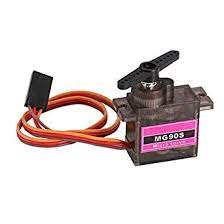

Servo Motor
Why to choose servo motor amongst other motors? Why MG90S servo motor?
- As we already know, servo motor is an absolute positioning motor. Due to its internal feedback mechnism, it gives accurate rotation.
- So, due to accurate positioning requirement, we chose to go with servo motor.
- MG90S has metal (aluminium) gear, which gives accurate result than plastic gear.
- It has required torque (around 2 kg/cm) to rotate sensor module.
- Moreover, it can be also commanded to the specific angle using simple PWM I/O command.
Working of Servo motor:
- One of the benefits of using a servo motor is one always know at what position it is in. It got feedback mechanism built inside.
- Servo makes a close loop system. As servo motor includes feedback mechanism.
- Servo motor comprise of:
- Control circuit
- Stator and rotor (a regular motor)
- Output Shaft
- Amplifier
- Encoder or Resolver (positional feedback)
- Output shaft of servo motor can be moved to a particular angle, position and velocity.
- Servo uses absolute positioning.
- With servo, we can target at which angle we want servo to rotate. This is called absolute positioning. This is contrast with Stepper motor, where relative positioning is being used. The next position of the motor would be result of previous position and present input.
Controlling Servo Motor with Rasberry Pi Pico
Connection between Servo Motor and Raspberry Pi Pico
- Brown wire – Ground wire connected to the ground of system
- Red wire – Powers the motor typically +5V is used
- Orange Wire – PWM signal is given in through this wire to drive the motor
PWM Control
- PWM Frequency for MG90S should be: 50 Hz
- PWM Period is: 20 ms
- The RP2040 PWM block has 8 identical slices. Each slice can drive two PWM output signals, or measure the frequency or duty cycle of an input signal. This gives a total of up to 16 controllable PWM outputs. All 30 GPIOs can be driven by the PWM block.
- The PWM hardware functions by continuously comparing the input value to a free-running counter. This produces a toggling output where the amount of time spent at the high output level is proportional to the input value. The fraction of time spent at the high signal level is known as the duty cycle of the signal.
- Pico system clock has 125 MHz frequency.
- PWM Genaration by Raspberry Pi Pico.
Useful Resources
MG90S Servo Motor Datasheet: DatasheetFor more information refer documentation.